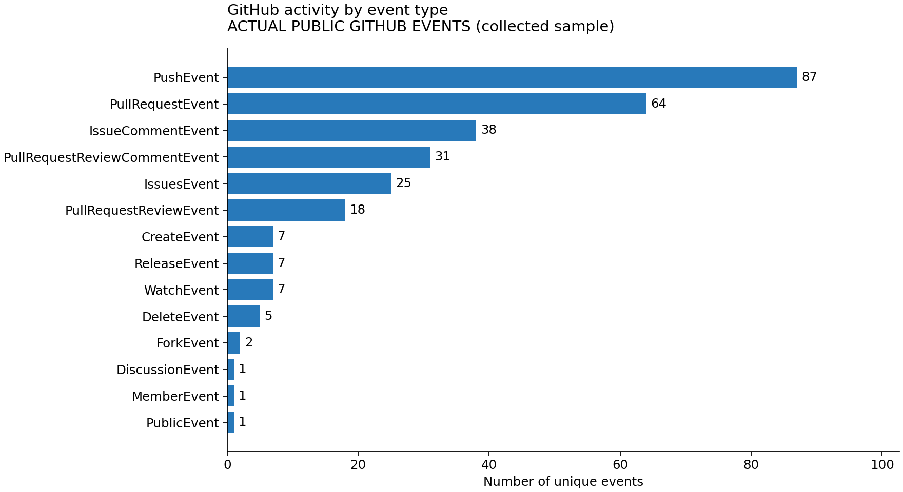
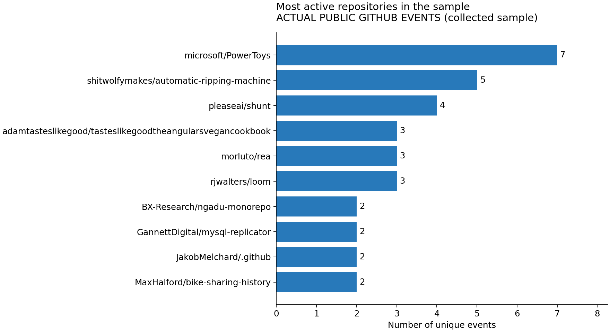
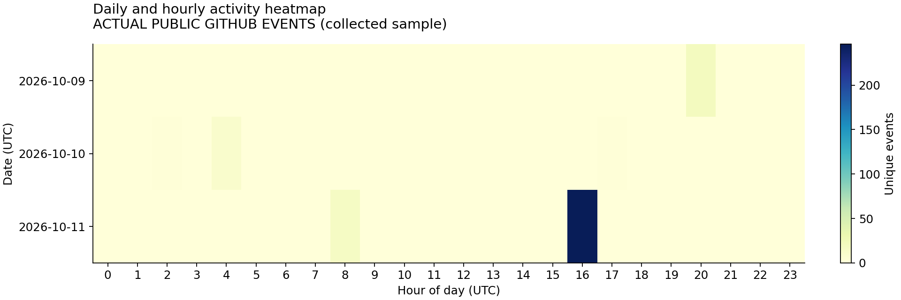

Apache Spark / PySpark · FA2
{
"dataset_label": "ACTUAL PUBLIC GITHUB EVENTS (collected sample)",
"input": "D:\\SEM 7\\FA2 BDA REAL DATA\\GitHub_Actual_Events.jsonl",
"spark_version": "4.0.1",
"input_records": 294,
"valid_unique_before_source_filter": 294,
"unique_events": 294,
"unique_repositories": 261,
"unique_developers": 208,
"synthetic_events": 0,
"start_utc": "2026-10-10 01:45:53",
"end_utc": "2026-10-11 22:18:23",
"source_filter": "real"
}

